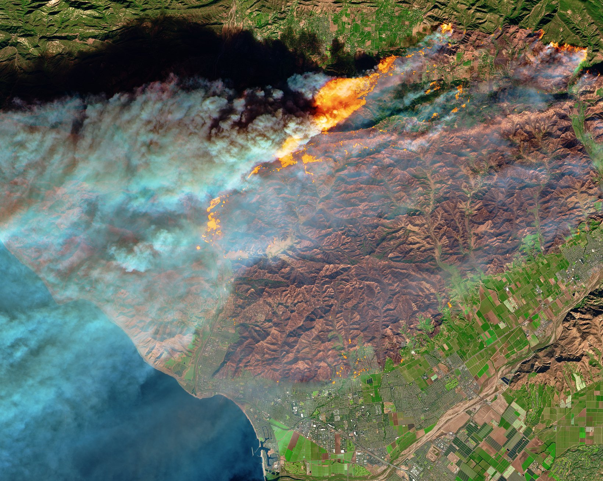
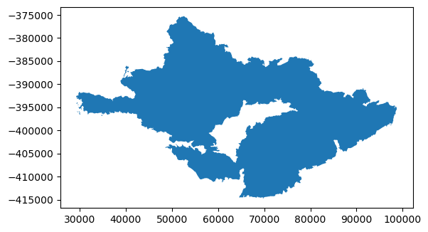
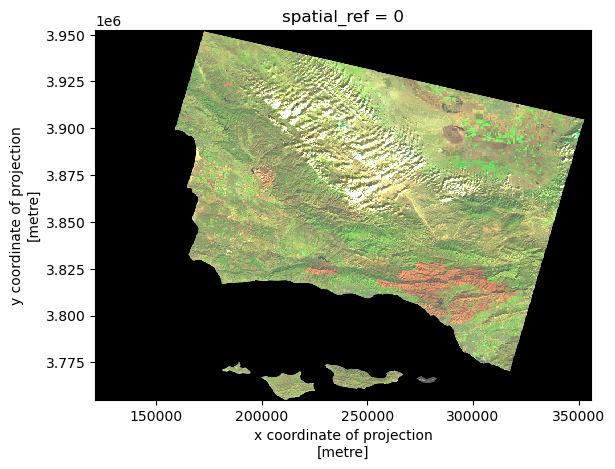
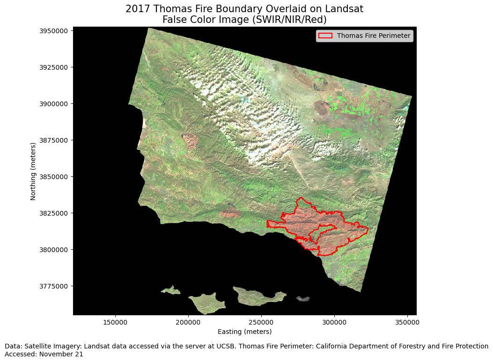
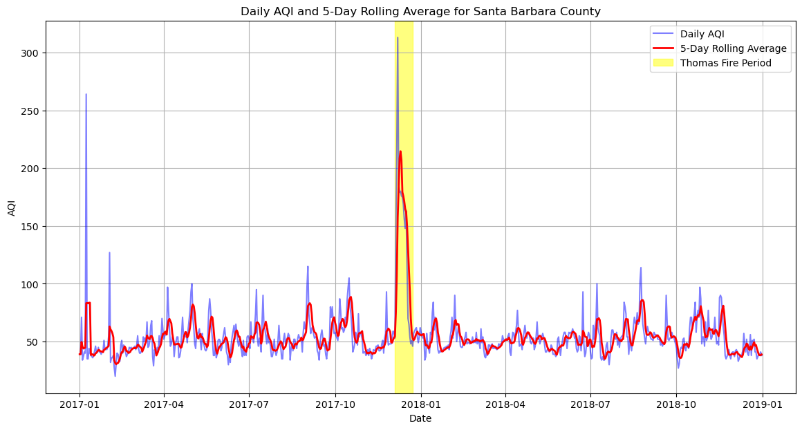

import os
import matplotlib.pyplot as plt
import geopandas as gpd
import pandas as pd
import rioxarray as rioxr
import matplotlib.ticker as ticker
from matplotlib.patches import Patch
import warnings 
Impacts of the Fire
The Thomas Fire, which ignited on December 4, 2017, and burned until January 12, 2018, stands as one of the most devastating wildfires in California’s history. Spanning over 281,893 acres (approximately 1,141 square kilometers), it destroyed 1,063 structures and caused damages exceeding $2.2 billion.
Located in Southern California, the fire affected Ventura and Santa Barbara counties. These areas are known for their dry, Mediterranean climate, which can exacerbate fire conditions. The fire’s vast spread impacted a variety of landscapes, including urban areas, agricultural lands, and natural reserves.
The Thomas Fire occurred during a particularly severe fire season in California, which saw multiple large-scale wildfires. Historically, this region has been prone to wildfires, but recent years have seen an increase in both frequency and intensity, attributed to climate change and changing land use patterns.
The fire’s impact on air quality was devastating, with particulate matter levels soaring and the Air Quality Index (AQI) reaching hazardous levels in affected areas. Communities, especially those with vulnerable populations such as the elderly and children, faced significant health risks. The destruction of over 1,000 structures also led to displacement and long-term economic challenges for residents.
In this blog post, we delve into the use of false color imagery and AQI analysis to uncover the environmental and health impacts of the Thomas Fire. By leveraging satellite data and geospatial analysis, we aim to provide a comprehensive understanding of how this catastrophic event altered the landscape and air quality. This analysis offers insights into the broader implications of wildfires on public health and environmental sustainability.
About the Data
Fire Perimeter: Shapefile of the Thomas Fire perimeter, obtained from the California Department of Forestry and Fire Protection (CAL FIRE).
Satellite Imagery: Landsat 8 imagery accessed via the server at UCSB
AQI Data[^3]: This dataset is a dataframe with AQI values of cities all across the US. Retrieved from The U.S. Environmental Protection Agency [^3]
References
U.S. Environmental Protection Agency. (2017). Daily AQI by county, 2017 [Data set]. Retrieved from https://aqs.epa.gov/aqsweb/airdata/daily_aqi_by_county_2017.zip
U.S. Environmental Protection Agency. (2017). Daily AQI by county, 2017 [Data set]. Retrieved from https://aqs.epa.gov/aqsweb/airdata/daily_aqi_by_county_2018.zip
California Department of Forestry and Fire Protection (CalFire). (2023). Fire perimeters. Retrieved November 16, 2024, from https://www.fire.ca.gov/what-we-do/fire-resource-assessment-program/fire-perimeters
Landsat Data: EDS 220. (2024). Retrieved from /courses/EDS220/data/hwk4_landsat_data landsat8-2018-01-26-sb-simplified.nc
False Color: A Quick Overview
False color imagery is a powerful tool used in remote sensing to enhance specific features of the landscape that might not be visible in natural color images. By assigning visible colors (like red, green, and blue) to spectral bands that the human eye cannot see (such as near-infrared), false color images highlight various aspects of the environment. For instance, healthy vegetation reflects more infrared light and appears bright red in false color images, while burned areas, like those from the Thomas Fire, show up in darker hues, making them easier to distinguish.
About
Purpose:
In this blog post, we delve into the use of false color imagery and AQI analysis to uncover the environmental and health impacts of the Thomas Fire. By leveraging satellite data and geospatial analysis, we aim to provide a comprehensive understanding of how this catastrophic event altered the landscape and air quality. This analysis offers insights into the broader implications of wildfires on public health and environmental sustainability.
Now let’s dive in by importing some libraries!
Import Libraries
Import File Geodatabase
# Read in gdb file with geopandas. Save as variable fire_bounds
fire_bound = gpd.read_file("data/fire23-1gdb/fire23_1.gdb")Quick Data Exploration
Checking a few things like head, crs and shape is important to familarizing yourself with the data you are working with.
# Check the dataset
print(fire_bound.head())
# Check the CRS
print(fire_bound.crs)
# Check the number of rows and columns
print(fire_bound.shape) YEAR_ STATE AGENCY UNIT_ID FIRE_NAME INC_NUM \
0 2023.0 CA CDF SKU WHITWORTH 00004808
1 2023.0 CA LRA BTU KAISER 00010225
2 2023.0 CA CDF AEU JACKSON 00017640
3 2023.0 CA CDF AEU CARBON 00018821
4 2023.0 CA CDF AEU LIBERTY 00018876
IRWINID ALARM_DATE \
0 {7985848C-0AC2-4BA4-8F0E-29F778652E61} 2023-06-17T00:00:00+00:00
1 {43EBCC88-B3AC-48EB-8EF5-417FE0939CCF} 2023-06-02T00:00:00+00:00
2 {B64E1355-BF1D-441A-95D0-BC1FBB93483B} 2023-07-01T00:00:00+00:00
3 {CB41DB0A-E4B1-489D-A4EA-738F2CD6DB3B} 2023-07-11T00:00:00+00:00
4 {F83F70A4-07A7-40B8-BD51-10CCC1C30D63} 2023-07-11T00:00:00+00:00
CONT_DATE C_METHOD CAUSE OBJECTIVE COMPLEX_NAME \
0 2023-06-17T00:00:00+00:00 1.0 5.0 1.0 None
1 2023-06-02T00:00:00+00:00 1.0 5.0 1.0 None
2 2023-07-02T00:00:00+00:00 1.0 2.0 1.0 None
3 2023-07-11T00:00:00+00:00 1.0 9.0 1.0 None
4 2023-07-12T00:00:00+00:00 1.0 14.0 1.0 None
COMPLEX_ID COMMENTS FIRE_NUM Shape_Length Shape_Area \
0 None None None 933.907127 23184.946763
1 None None None 986.343353 55046.898792
2 None None None 2115.572740 112561.147688
3 None None None 1994.866526 237794.210367
4 None None None 4008.305800 287241.810389
geometry
0 MULTIPOLYGON (((-243242.555 394267.371, -24324...
1 MULTIPOLYGON (((-167826.147 203275.612, -16782...
2 MULTIPOLYGON (((-79176.443 31393.490, -78959.0...
3 MULTIPOLYGON (((-85936.934 47921.886, -85856.4...
4 MULTIPOLYGON (((-86427.836 26461.613, -86436.1...
EPSG:3310
(22261, 19)# Check if the CRS is projected or geographic
if fire_bound.crs.is_projected:
print("The CRS is projected.")
elif fire_bound.crs.is_geographic:
print("The CRS is geographic.")The CRS is projected.Fire Data Exploration
With some quick data explloration, you can see that the dataset from California Department of Forestry and Fire Protection has over 22,000 fires between the years 1878 and 2023. You can also see what types column names and values we are dealing with. For example, are there capital letters? spaces? unusual characters in columns? This will help further filtering the data to the Thomas Fire in 2017
💡 Tip: Look at the year column. Do you notice anything that might make filtering the data in that column tricky?
Now that we know we can filter for just the Thomas Fire in 2017
# Save as vairable thomas_fire
thomas_fire = fire_bound[(fire_bound['FIRE_NAME'] == 'THOMAS') & (fire_bound['YEAR_'] == 2017.0)]
# Check the dataset
thomas_fire.head()| YEAR_ | STATE | AGENCY | UNIT_ID | FIRE_NAME | INC_NUM | IRWINID | ALARM_DATE | CONT_DATE | C_METHOD | CAUSE | OBJECTIVE | COMPLEX_NAME | COMPLEX_ID | COMMENTS | FIRE_NUM | Shape_Length | Shape_Area | geometry | |
|---|---|---|---|---|---|---|---|---|---|---|---|---|---|---|---|---|---|---|---|
| 2654 | 2017.0 | CA | USF | VNC | THOMAS | 00003583 | 2017-12-04T00:00:00+00:00 | 2018-01-12T00:00:00+00:00 | 7.0 | 9.0 | 1.0 | None | None | CONT_DATE based on Inciweb | None | 445282.444798 | 1.140367e+09 | MULTIPOLYGON (((34867.386 -396856.457, 34819.3... |
# Check the fire perimeter by plotting
thomas_fire.plot()
After I filtered for just the 2017 Thomas Fire, it is handy to plot it to see exactly what you are working with. In this case, this looks to be the Thomas Fire perimeter we are looking for! Next, I’ll export it as a shapefile to use later.
Export the filtered dataframe as a shapefile to use later in our analysis
# Use package warnings to ignore unwanted outputs`qw
warnings.filterwarnings('ignore')
# Specify the output path where you want to save the new shapefile
output_path = "data/Thomas_Fire.shp"
# Save the filtered GeoDataFrame to the specified path
thomas_fire.to_file(output_path)📝 A Quick Note: I chose to use a shapefile for several reasons, the first being because I am more familiar with that file type. Second, the format is straightforward and easy to use when working with vector data.
Bring in Landsat Image
Next, upload the satellite image of the Santa Barbara area. This image is form the Landsat program and specifically Landsat 8
# Create file path to landsat data, save as variable root
root = os.path.join('/','courses', 'EDS220', 'data', 'hwk4_landsat_data')
# Use os.path.join to select variable root and file landsat8-2018-01-26-sb-simplified.nc file, save it as variable fp
fp = os.path.join(root,'landsat8-2018-01-26-sb-simplified.nc')
# Use rioxr to open file and save it as color bands
color_bands = rioxr.open_rasterio(fp)
# Check the variable
color_bands<xarray.Dataset> Size: 25MB
Dimensions: (band: 1, x: 870, y: 731)
Coordinates:
* band (band) int64 8B 1
* x (x) float64 7kB 1.213e+05 1.216e+05 ... 3.557e+05 3.559e+05
* y (y) float64 6kB 3.952e+06 3.952e+06 ... 3.756e+06 3.755e+06
spatial_ref int64 8B 0
Data variables:
red (band, y, x) float64 5MB ...
green (band, y, x) float64 5MB ...
blue (band, y, x) float64 5MB ...
nir08 (band, y, x) float64 5MB ...
swir22 (band, y, x) float64 5MB ...Take a look at the output for the variable color_bands. You can see the data contains variables named “red”, “green”, “blue”, “nir08”, “swir22” and has the dimensions (band: 1x: 870y: 731). These variable names are what we use to present a false color image.
Drop the Band Dimensions and False Color Mapping
# Original dimensions and coordinates
print(color_bands.dims, color_bands.coords,'\n')
# Remove length 1 dimension (band)
color_bands = color_bands.squeeze()
print(color_bands.dims, color_bands.coords,'\n')
# Remove coordinates associated to band
color_bands = color_bands.drop_vars('band')
print(color_bands.dims, color_bands.coords)FrozenMappingWarningOnValuesAccess({'band': 1, 'x': 870, 'y': 731}) Coordinates:
* band (band) int64 8B 1
* x (x) float64 7kB 1.213e+05 1.216e+05 ... 3.557e+05 3.559e+05
* y (y) float64 6kB 3.952e+06 3.952e+06 ... 3.756e+06 3.755e+06
spatial_ref int64 8B 0
FrozenMappingWarningOnValuesAccess({'x': 870, 'y': 731}) Coordinates:
band int64 8B 1
* x (x) float64 7kB 1.213e+05 1.216e+05 ... 3.557e+05 3.559e+05
* y (y) float64 6kB 3.952e+06 3.952e+06 ... 3.756e+06 3.755e+06
spatial_ref int64 8B 0
FrozenMappingWarningOnValuesAccess({'x': 870, 'y': 731}) Coordinates:
* x (x) float64 7kB 1.213e+05 1.216e+05 ... 3.557e+05 3.559e+05
* y (y) float64 6kB 3.952e+06 3.952e+06 ... 3.756e+06 3.755e+06
spatial_ref int64 8B 0💡 Tip: Dropping the band will allow us to work with one less dimesion, making it easier to plot
In remote sensing and imaging, each color band (red, green, blue) represents a different part of the visible light spectrum captured by sensors. By combining these bands, we can create a more natural and visually understandable image, similar to what we see with our eyes.
# Convert the selected variables to a NumPy array and plot the RGB image
color_bands[['red', 'green', 'blue']].to_array().plot.imshow()Clipping input data to the valid range for imshow with RGB data ([0..1] for floats or [0..255] for integers).
A quick look and we can see that this does not look like a satellite image and we recieved a warning about “valid range”. This is because our values are being skewed because of some extreme numbers. we will want to change the parameter to robust = True. It scales the image based on these percentiles, effectively ignoring the extreme low (below the 2nd percentile) and high (above the 98th percentile) values.
🤔 Thinking: What are some object in the earths atmosphere that could cause extreme values? HINT: Think of what blocks the sun for us!
# Convert the selected variables to a NumPy array and plot the RGB image, adjust scale with robust = True
color_bands[['red', 'green', 'blue']].to_array().plot.imshow(robust = True)
Switching to the SWIR (Shortwave Infrared), NIR (Near-Infrared), and blue spectral bands allows us to visualize environmental details that aren’t visible with traditional RGB bands. SWIR is useful for detecting moisture content in soil and vegetation, while NIR helps assess vegetation health. It should help us seeing the impact of the Thomas Fire more clearly.
# Create false color image by plotting the short-wave infrared (swir22), near-infrared, and red variables
color_bands[['swir22', 'nir08', 'blue']].to_array().plot.imshow(robust = True)
Now, looking at the bottom right of the image, the Thomas Fire burn area is indeed more clearly defined.
Map with Thomas Fire SHapefile We Made
Now we can use the shapefile we made early to highlight the Thomas Fire’s perimeter.
# Import Thomas Fire Perimeter
fire_bound = gpd.read_file(os.path.join('data','Thomas_Fire.shp'))
# Check CRS's
print(fire_bound.crs == color_bands.rio.crs)FalseSince the CRS’s do not match, we need to transform. Since this is important for mapping, we will write an assert test to make sure
# Ensure CRS matches (transform CRS if necessary)
if fire_bound.crs != color_bands.rio.crs:
fire_bound = fire_bound.to_crs(color_bands.rio.crs)
# Check if the CRSs match
assert fire_bound.crs == color_bands.rio.crs, "CRS of fire_bound does not match CRS of color_bands"
print("CRS match successfully!")CRS match successfully!💡 Tip: Assert tests are a quick way to verify your output is what you want
Now that they match, we can plot them in the same figure.
# Plot the RGB image with robust scaling
fig, ax = plt.subplots(figsize=(10, 8))
color_bands[['swir22', 'nir08', 'red']].to_array().plot.imshow(ax=ax, robust=True)
# Set the y-axis to display integers only
ax.yaxis.set_major_formatter(ticker.FormatStrFormatter('%d'))
# Overlay the fire perimeter
fire_bound.plot(ax=ax, edgecolor='red', facecolor='none', linewidth=1.5, label='Thomas Fire Perimeter')
# Customize the plot
ax.set_title('2017 Thomas Fire Boundary Overlaid on Landsat\nFalse Color Image (SWIR/NIR/Red)', fontsize=15)
ax.set_xlabel('Easting (meters)')
ax.set_ylabel('Northing (meters)')
# Add a custom legend
legend_handles = [Patch(facecolor='none', edgecolor='red', linewidth=1.5, label='Thomas Fire Perimeter')]
ax.legend(handles=legend_handles, loc='upper right')
# PLot figure text
plt.figtext(0, 0,
"Data: Satellite Imagery: Landsat data accessed via the server at UCSB. Thomas Fire Perimeter: California Department of Forestry and Fire Protection\nAccessed: November 21")
plt.show()
This map illustrates the Thomas Fire perimeter overlaid on a false color image created using shortwave infrared (SWIR), near-infrared (NIR), and red bands from the Landsat satellite imagery. SWIR (Shortwave Infrared) Band: Mapped to the red channel, SWIR is sensitive to moisture content and can distinguish between dry and wet areas, as well as highlight burn scars from wildfires. NIR (Near-Infrared) Band: Mapped to the green channel, NIR is useful for vegetation analysis because healthy vegetation reflects more near-infrared light. Red Band: Mapped to the blue channel, the red band provides detail and clarity to the overall image.
The Impact on AQI
How did the thomas fire effect AQI? Let’s read in the AQI data we talked about at earlier to see!
# Read in data, use compression = 'zip' for the ZIP file
aqi_17 = pd.read_csv('https://aqs.epa.gov/aqsweb/airdata/daily_aqi_by_county_2017.zip', compression = 'zip')
aqi_18 = pd.read_csv('https://aqs.epa.gov/aqsweb/airdata/daily_aqi_by_county_2018.zip', compression = 'zip')Data Exploration and Cleaning
Like we did before lets explore the data to see what we are working with.
# Do some data exploration
print(aqi_17.columns)
print(aqi_18.columns)
print(aqi_17.shape)
print(aqi_18.shape)
print(aqi_17.isnull().sum())
print(aqi_18.isnull().sum())Index(['State Name', 'county Name', 'State Code', 'County Code', 'Date', 'AQI',
'Category', 'Defining Parameter', 'Defining Site',
'Number of Sites Reporting'],
dtype='object')
Index(['State Name', 'county Name', 'State Code', 'County Code', 'Date', 'AQI',
'Category', 'Defining Parameter', 'Defining Site',
'Number of Sites Reporting'],
dtype='object')
(326801, 10)
(327543, 10)
State Name 0
county Name 0
State Code 0
County Code 0
Date 0
AQI 0
Category 0
Defining Parameter 0
Defining Site 0
Number of Sites Reporting 0
dtype: int64
State Name 0
county Name 0
State Code 0
County Code 0
Date 0
AQI 0
Category 0
Defining Parameter 0
Defining Site 0
Number of Sites Reporting 0
dtype: int64For the purpose of the analysis I only printed the exploration I found to be important to moving along in the analysis. Columnn names and null values are important for filtering and for computations like mean, which we will use for our AQI. Knowing how many rows are in dataframes will come in handy for stacking, which we will do next.
Now lets stack the 2017 and 2018 into one dataframe.Since we want to keep all observations for AQI, we will use concat to put them all together.
# Use .concat to glue the data frames togehter, ave it as variable aqi
aqi = pd.concat([aqi_17, aqi_18])
# Check the first
aqi.shape(654344, 10)Since I know that each data set had around 325,000 rows, 654,344 is on par with what I expect from the concat function.
Now that we have the data all in one place, let’s clean the names to remove the space in some of the coumn names, filter for Santa Barbara, and change the date column to datetime
# Simplify column names
aqi.columns = (aqi.columns
.str.lower()
.str.replace(' ','_')
)
# Check the output
aqi.columns
# Filter by county is equal to Santa Barbara, save as variable aqi_sb, use .drop to remove the columns listed above from the aqi_sb data frame
aqi_sb = aqi[aqi['county_name'] == 'Santa Barbara'].drop(['state_name',
'county_name',
'state_code',
'county_code'], axis = 1)
# Use pd.to_datetime to change the 'date' column in the aqi_sb data frame
aqi_sb.date = pd.to_datetime(aqi_sb['date'])
# Use set_index to make the 'date' column the index
aqi_sb = aqi_sb.set_index('date')Calculate Rolling Average and Plot
When analyzing air quality data, it’s essential to smooth out short-term fluctuations to see clearer trends over time. One effective method is to calculate a rolling average, which provides a smoothed value by averaging over a specific period. Here’s one way to do that with .rolling()
# Calculate AQI rolling average over 5 days
rolling_average = aqi_sb['aqi'].rolling('5D').mean()
# Call previous variable rolling_average and save it to a new column named five_day_average in the aqi_sb data frame
aqi_sb['five_day_average'] = rolling_average
# Check for the new column in the head
aqi_sb.head()
# Create the plot
plt.figure(figsize=(14, 7))
plt.plot(aqi_sb.index, aqi_sb['aqi'], label='Daily AQI', color='blue', alpha=0.5)
plt.plot(aqi_sb.index, rolling_average, label='5-Day Rolling Average', color='red', linewidth=2)
# Highlight the period of the Thomas Fire in December 2017
plt.axvspan(pd.Timestamp('2017-12-04'), pd.Timestamp('2017-12-23'), color='yellow', alpha=0.5, label='Thomas Fire Period')
# Add titles and labels
plt.title('Daily AQI and 5-Day Rolling Average for Santa Barbara County')
plt.xlabel('Date')
plt.ylabel('AQI')
plt.legend()
plt.grid(True)
plt.show()
Wrapping Up
In this plot, the Thomas Fire dates are highlighted by the yellow rectangle. It is clear that the AQI went through the roof during this period, a spike that was anticipated given the nature of forest fires. Such an event underscores the immediate effects of wildfires on air quality, posing significant health risks to nearby communities and emphasizing the need for robust environmental monitoring and emergency response strategies. By analyzing these trends through false color imagery and AQI data, we gain invaluable insights into the environmental and public health challenges posed by such disasters, reinforcing the importance of sustainable land management and fire prevention measures.